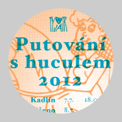

10. 9. 2012 | 10.34 | Radka Tesárková
Schůzka rodičů výběrových souborů Před oponou, Štronza a Za oponou se koná v pondělí 17. září od 19.45 v Kafé Podkůvka, Schnirchova 26, Praha 7. Program – informace o činnosti a akcích všech souborů. Účast nutná. Těšíme se na vás. Vedoucí souborů.
16. 8. 2012 | 22.15 | Radka Tesárková
Vážení rodiče!
Pokud vaše dítě navštěvovalo kroužek, či výběrový soubor Ty-já-tru ve školním roce 2011/2012 a chcete, aby tento zájmový útvar navštěvovalo i ve školním roce 2012/2013, sdělte tuto skutečnost umělecké vedoucí souboru Radce Tesárkové na mail radkatesarkova@volny.cz a to do 30. srpna. Po tomto datu budou volná místa v kroužcích dána k dispozici novým členům. Děkujeme.
Dodatečné postupové zkoušky do Ty-já-tru pro věkovou kategorii 12—15 let se konají ve čtvrtek 6. září v Divadle Radar. K postupkám si, prosím, připravte přednes básně, či prózy zpaměti, písničku lidovou, či umělou (vždy však mějte v zásobě tu lidovou). Pokud hrajete na hudební nástroj, vemte ho sebou. Dále vás čekají mluvní etuda, pohybová etuda a ještě… K postupovým zkouškám je nutné se přihlásit na mobilu vedoucí souboru Radky Tesárkové(tel.: 724 350 605). Těšíme se na vás!
13. 8. 2012 | 9.58 | webmaster
Všichni dorazili do tábora Na Ostrůvku v pořádku. Zatím nám přeje pěkné počasí.
12. 7. 2012 | 16.25 | webmaster
Následující dokumenty přineste vyplněné v den odjezdu k autobusu. Děkujeme.
 Posudek lékaře
Posudek lékaře
 Potvrzení o bezinfekčnosti
Potvrzení o bezinfekčnosti
 Prohlášení odpovědnosti za škody
Prohlášení odpovědnosti za škody
 Údaje o zdravotním stavu
Údaje o zdravotním stavu
11. 6. 2012 | 16.25 | webmaster
Trasa letošního Putování s Huculem vypadá takto:
7. 7. — Kadlín, 18.00
8. 7. — Mšeno, 18.00
10. 7. — Střezivojice
11. 7. — Bosyně, 18.00
12. 7. — Vidim, 14.00
13. 7. — Želízy
14. 7. — Hoštka, 17.00

{kind=link}
9. 6. 2012 | 17.40 | webmaster
Výuka v kroužcích DDS Ty-já-tr ve školním roce 2011/2012 končí v týdnu od 18. do 22. června. Výuka ve výběrových souborech končí dle dispozic vedoucích. Výuka ve školním roce 2012/2013 začíná v týdnu od 10. do 14. září. Zápis pak probíhá od 3. září (od 14.00 hodin) na DDM Praha 7 Šimáčkova 16, 2. patro.
25. 5. 2012 | 09.19 | webmaster
Vážení rodiče, všichni dorazili na festival Brnkání do Brna v pořádku.
28. 4. 2012 | 18.06 | Radka Tesárková
Krajské kolo recitační přehlídka Pražské poetické setkání se neslo ve znamení obrovského úspěchu členů Ty-já-tru. Na národní přehlídku Dětská scéna ve Svitavách postoupili Stanislav Hlaváč (3. kategorie) s textem Vojtěcha Steklače Boříkovy lapálie a Jáchym Hájek (4. kategorie) s textem Terry Bissona Stiskni Ann. Navíc Štěpán Mikoláš (2. kategorie) získal ocenění za zaujetí příběhem a práci s detailem (Štěpán recitoval Pohádku o brněnském krokodýlovi Oldřicha Mikoláška), Martin Novotný (4. kategorie) za texty Na počátku bylo vejce (E.Kishon) a z knihy Drobty pod stolem (K. Čapek) obdržel ocenění za osobitý projev a ocenění za práci s textem J. K. Jerome Jak Harris zpívá kuplety získala Anna Poláková.
Všem recitátorům moc gratulujeme a Standovi a Jáchymovi do národního kola přejeme – zlomte vaz!
26. 4. 2012 | 22.53 | webmaster
Postupové zkoušky do výběrových souborů Před oponou, Za oponou a Šupitopresto se konají 28. května a 13. června vždy od 14. 00 do 18.00 hodin. K postupkám si, prosím, připravte přednes básně, či prózy zpaměti, písničku lidovou, či umělou (vždy však mějte v zásobě tu lidovou). Pokud hrajete na hudební nástroj, vemte ho sebou. Dále vás čekají mluvní etuda, pohybová etuda a ještě… K postupovým zkouškám je nutné se přihlásit na mobilu vedoucí souboru Radky Tesárkové(Tel.: 724 350 605). Těšíme se na vás!
26. 4. 2012 | 8.04 | webmaster
Pozor! Ve dnech 30. dubna a 7. května ve všech zájmových útvarech Ty-já-tru probíhá výuka. Státní svátky ctíme – výuka dvakrát v úterních kroužcích odpadá.
16. 4. 2012 | 19.22 | webmaster
Vážení diváci, z provozních důvodů musíme posunout začátek představení na 20.00 hodin. Děkujeme za pochopení.